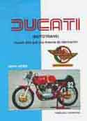
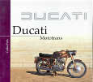
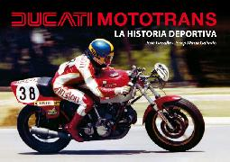
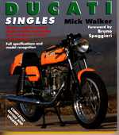
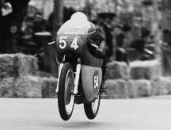
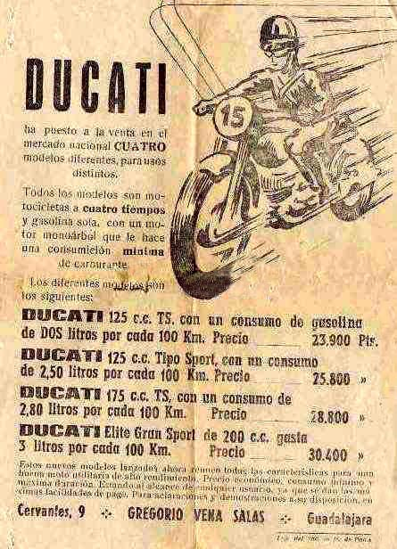

LINKS:

AVISO:
Algunas fotos proceden de Internet; si crees que deberían ser quitadas de la página, por favor escribe un
Esta página no tiene ánimo de lucro.
- Libros sobre Ducati-Mototrans:
- Herreros, Francisco. Ducati Mototrans: mucho más que una licencia de fabricación. Barcelona; Moto Retro, 1999. ISBN : 8492008075 (160 páginas)
- Polo, Carlos. Ducati Mototrans. Girona; Ediciones Benzina, 2000. ISBN: 8481280895 (114 páginas)
- Gazulla, José - Galindo, Josep Maria. Ducati Mototrans, La Historia Deportiva. Zaragoza; Autoeditado, 2009. ISBN: pdte. (240 páginas)
- Algunos artículos en revistas sobre Ducati Mototrans:
- Ruiz, Andrés. "Cruce de caminos (Ducati Darmah 900 SD)" Motor Clásico nº 172 (abril 2002): 54-58.
- Polo, Carlos. "Mike Hailwood y Ducati TT1" Moto Clásica nº 2 (mayo 2002).
- Polo, Carlos. "Ducati 24 H: Carreras Cliente " Motor Clásico nº 161 (mayo 2001).
- Polo, Carlos. "Mike Hailwood y Ducati TT1" Moto Clásica nº 2 (mayo 2002).
- Urdín, Mariano. "El sueño de una noche de verano-Ducati 24 horas". La Moto nº 145 (mayo 2002): 98-103
- Polo, Carlos. "El doctor Ricardo Fargas Bolaños" Moto Clásica nº 1 (febrero 2002): 50-56.
- Polo, Carlos. "El bramido del avión-Ducati 298 ex-Ricardo Fargas" Moto Clásica nº 1 (febrero 2002): 41-49.
- De la Maza, Ángel. "Vento y Desmo, el final de la cuenta atrás" Motorcycle Perfomance nº 26 (febrero 2001): 80-84.
- Polo, Carlos. "Mototrans, la desaparición" Motorcycle Perfomance nº 26 (febrero 2001): 74-78.
- García de Mingo, Roberto. "Larga noche de julio." Motorcycle Perfomance nº 21 (septiembre 2000): 72-77.
- Herreros, Francisco. "Ducati y sus monoárbol". Moto Retro nº 25 (marzo 1996): 40 pags.
- Polo, Carlos. "La reina del bulevar." Motorcycle Perfomance nº 18 (junio 2000): 88-91.
- Ruiz, Andrés. "La primera Ducati. (Ducati 98)" Motor Clásico nº 143 (diciembre 1999): 80-85.
- Villanueva, Pablo. "4 tiempos popular. (Ducati 250 Deluxe)" Motor Clásico nº 139 (agosto 1999)
- Borja, A. "Juguetes para mayores" Motos de Ayer nº 19 (año 1999) 47-51.
- Borja, A. "Ducati 250 Deluxe" Motos de Ayer nº 14 (año 1998) 24-30.
- Velda, V. "Comparativa Road 250-Yamaha 250 SR" Motos de Ayer nº 3 (año 1997) 20-21.
- Borja, A. "Ducati 24 horas 30 años después" Motos de Ayer nº 1 (año 1996) 44-50.
-Nota: En varios números de la revista Motor Clásico hay artículos dedicados a Ducati Mototrans, y para buscarlos se puede consultar el índice por marcas que aparece en los números más recientes de la revista.
-De igual manera, la revista Motos de Ayer ha dedicado algunos artículos a Ducati Mototrans. Esta revista tiene página Web y se pueden consultar índices de números atrasados; su dirección web es:
-Existen manuales de usuario y catálogos de despiece de Mototrans. Sirven para casi todos los modelos de los 60 exceptuando la 24 horas, y no son muy caros en compararación con otras cosas del sector coleccionista (un libro fotocopiado del manual original y encuadernado "normalito" cuesta unos 18 € (unas 3000 pesetas). Se pueden encontrar en la librería Libro Motor (ver direcciones de interés).
- Artículos en Internet:
- Artículos en Internet por el club belga Ducati DESMODROME http://www.ducati-sud-belgio.be/1.0/. En francés. Saludos a Marc Poels.
- Se puede buscar en you tube algunos videos de aficionados con modelos antiguos de Ducati y otros. Basta con entrar en esta página y poner en el buscador DUCATI.
http://www.youtube.com/watch?v=-qs6h_01nDo
- Restauración de una Ducati 250. En inglés.
- Restauración de una Ducati 250 MACH 1 ¡MUY BUENA! En inglés.
- Ducati Élite 200 Mototrans.
- Libros sobre Ducati:
- Walker, Mick. Ducati
singles: All two and Four Stroke Single Cylinder Motorcycles, Including
Mototrans 1945 Onwards. Londres; Osprey Pub Co, ISBN: 1855327171,
October 1997. (192 pages)
-Nota: Libro imprescindible, con toda la historia de Ducati Italia desde sus comienzos y totalmente dedicado a las monoárbol. Incluye un apartado de Ducati Mototrans donde por cierto, no salen muy bien paradas. Difícil de encontrar, aunque lo puedes conseguir en www.borders.com si te atreves con la compra por internet. Es necesario tener conocimientos de inglés para entenderlo en profundidad.
- Revista en los quioscos con motos clásicas:
- Motorcycle perfomance magazine: Revista mensual con información sobre clásicas y un apartado de venta en las páginas centrales con fotografias. DESAPARECIDA.
- Moto clásica-Motociclismo clásico: Revistas trimestrales y mensuales, dedicadas en exclusiva a la moto clásica. Tienen página web y su dirección es http://www.moto-clasica.com/
- Motor clásico: Revista mensual dedicada principalmente dedicada a coches, pero con muy buena calidad. Siempre trae artículos sobre motos. Más para enterarse del mundillo, que para ver pruebas de motos antiguas.
- También la revista Motos de ayer, que se consigue por medio de suscripción, está dedicada a la moto clásica. Para ver más detalles, aconsejo ir a su página web www.motosdeayer.com o a la página de la maneta www.lamaneta.com..
- Direcciones de interés:
- Francisco Herreros /
Moto Retro. Apdo. de Correos 1656-08080 Barcelona. Tfo/Fax 93 2250414.
Especialista en la moto antigua. Ha escrito un libro sobre Ducati Mototrans, además de dedicar artículos a esta marca en su revista Moto Retro. También tiene todas las calcomanías necesarias para la restauración de nuestra Ducati. Se le puede localizar fácilmente en las ferias.
-
Sergio Romagosa Correduría de Seguros S.L. C/ Serpis, nº 6 (Urbanización El Bosque) 28670 Villaviciosa de Odón (Madrid). Tfo. 91 6167017.Aficionado al vehículo clásico. Tiene unos seguros para motos clásicas sin competencia. Su página web es:
Su correo electrónico: sromagosa@escuderia.com
- Libro Motor S. L.
C/ General Moscardó nº 8 (paralela a la calle Orense, cerca
de Cuatro Caminos) 28020 Madrid. Tfo. 91 5548195.
Ronda General Mitre, nº 188 08006 Barcelona. Tfo. 93 4175220.
Lugar imprescindible para encontrar libros, manuales, etc. de casi todas las marcas y modelos. Su página web es:
Su correo electrónico: libromot@infonegocio.com
- Mariano Sánchez.
C/ San Pedro, nº 15 28014 Madrid. Tfo. 91 4294842.
Antiguo mecánico de Ducati en Madrid. Al parecer cerró por jubilación y ahora su recambio lo tiene un mecánico de San Martín de Valdeiglesias que se llama Juan Martín. Se podían conseguir piezas imposibles de encontrar en otros sitios.
-
Juan Martin prepara Ducati para correr en clásicas (Tfo. 91 8610054). http://www.motosmartinmartin.com/
- Juliá Masip.
(Motos Hoyasuka) C/ Anselmo Clavé nº 77 17300-Blanes (Girona) 972
35 00 45.
Julian Masip March, nacido en Barcelona en 1957, ha dedicado toda su vida profesional a su pasión por las DUCATI. Su carrera profesional empieza en 1971, como aprendiz de mecánico en Ducati MOTOTRANS Barcelona, allí aprende a conocer las particularidades de las famosas motocicletas, y vive sus primeras experiencia en la competición, entre las que se encuentran las famosas 24H de Montjuic.
- Casa Calleja. C/ Embajadores, nº 59 28012 Madrid. Tfo. 91 5276703. Casa de Madrid donde se pueden conseguir piezas de todas las marcas. Si hay suerte, también algo de Ducati.
- Direcciones en Internet:
- Foro Mototrans.http://es.groups.yahoo.com/group/ducatimototrans. Foro Mototrans para compartir información con aficionados Ducati Mototrans en toda la Península e incluso a nivel internacional. En español.
- Club Ducati Scrambler http://www.ducatiscrambler.es/index.html. Abundante información sobre este modelo de Ducati y otras muchas cosas. En español.
- Foro Mototrans ciclomotores: http://ciclotrans.foroactivo.com/forum.htm. Foro Mototrans para compartir información con aficionados a ciclomotores Mototrans. En español.
- Páginas de Joaquín dedicadas a la "Minimarcellino": http://www.ducatiminimarcelino.jimdo.com (Mini Marcellino) http://www.miniducatista.jimdo.com (Mini 3). Páginas dedicada a los ciclomotores Ducati Mini Marcellino de Ducati Mototrans. En español.
- Ducati Italia. www.ducati.com. La casa madre tiene una página web oficial muy bonita con historia, fotos y un museo virtual. En inglés o italiano.
- Ducati meccanica. www.ducatimeccanica.com. Es una página de aficionados llena de recursos, fotos, etc. sobre Ducati. En inglés.
- La maneta. www.lamaneta.com. Página de motos clásicas imprescindible. Tiene mercadillo, enlaces a otras páginas, buena información, etc. En español.
- Motocra. www.motocra.com. Otra página española de motos clásicas Enlaces a otras páginas interesantes. Mercadillo.
- Manuales. http://epll.no-ip.com. Página española de Roberto y Quique con manuales de motos clásicas.
- Ducati Web Ring. Asociación de páginas sobre recursos Ducati, desde sus comienzos hasta la actualidad, hay de todo. Muchas páginas sobre Ducatis modernas. Ir a www.webring.com y poner Ducati en la búsqueda. La mayoría en inglés.
- Moto Directory. Directorio de búsqueda de marcas de motos, en inglés. Ir a www.moto-directory.com
INDEX-FOTOS-TÉCNICA-HISTORIA-MODELOS-DIAGRAMAS
